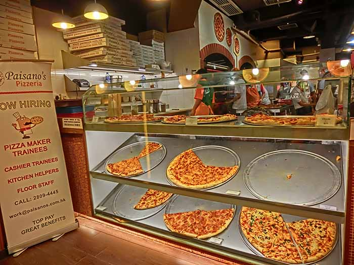

Build Your Own 2048!
I made my own version of 2048. How cool is that!?
Website Performance Optimization
Hey... this class looks familiar.
Mobile Web Development
Making mobile apps isn't so hard after all.
-  Cam's Pizzeria
Who wants a performant pizza?

Cameron Pittman
Course Developer